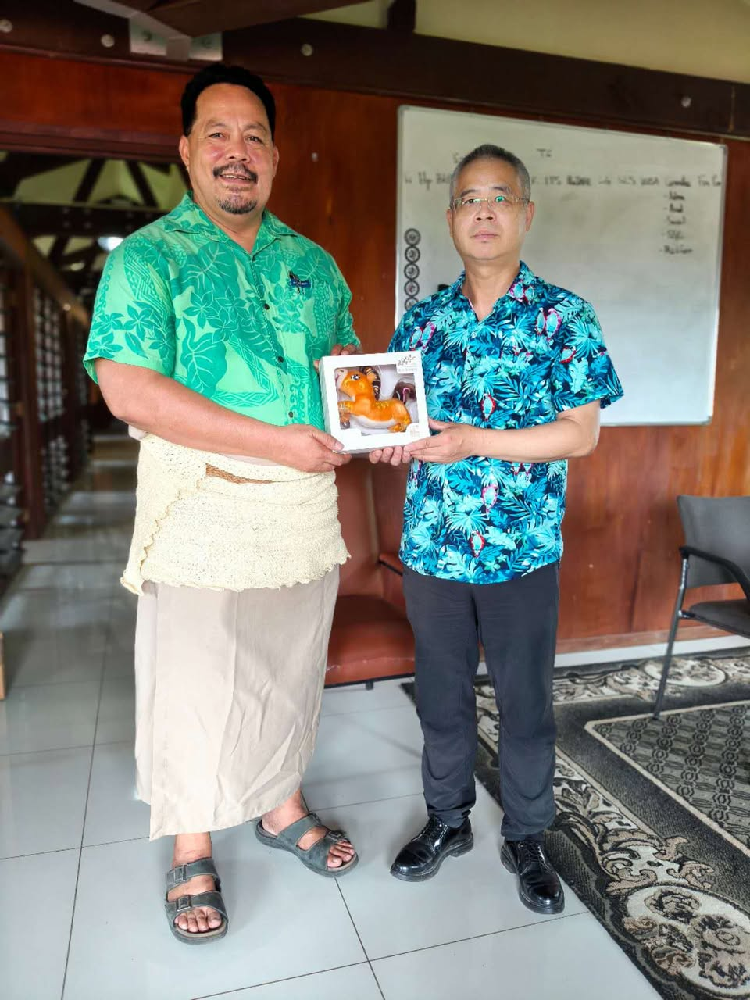

Last Week in the Pacific: Customs and Drugs, Liu Weimin’s Big Week, and More
Amid his packed schedule, Ambassador Liu also wrote and published an article in Talanoa ‘O Tonga, a local news source.
Liu argued that Tongan and Chinese values align, using the Lunar New Year as evidence. He praised China’s accomplishments during the 14th Five-Year Plan period and promoted Beijing’s four global initiatives.
Looking ahead, Liu drew a parallel between China’s upcoming 15th Five-Year Plan and Tonga’s Strategic Development Framework, predicting the two countries will “write an even brighter chapter.”
Summary of PRC Activity
Last week highlighted the range of China’s public engagement across the Pacific Islands. PRC ambassador to Tonga Liu Weimin and police representatives in the Solomon Islands pushed to expand China’s security assistance to local law enforcement. The embassy in Tonga also hosted a series of high-level political meetings and events in the capital. China’s medical teams also stayed busy providing services, conducting public diplomacy, and offering policy recommendations.
This Week’s Big Themes:
Internal Security Assistance
PRC Ambassador Liu Weimin met with Tonga’s newly appointed Minister for Revenue and Customs, Hon. Sevenitini Toumo’ua, to review past cooperation and press for expanded collaboration on border security. China has donated X-ray equipment to the Ministry to improve border enforcement—not a routine machinery handover, but part of a broader trend: security hybridization. Pacific Island states accept external security aid from the United States—for example, maritime patrolling—while China provides internal security assistance. Three days after this meeting, the United States signed an enhanced maritime security pact with Tonga. The pattern extends beyond Tonga: the Deputy Commissioner of the Chinese Police Liaison Team in the Solomon Islands pledged to strengthen cooperation in combating drug crimes. China’s police presence is most visible in the Solomon Islands, but Tonga shows how Beijing weaves itself into other countries’ internal security systems through less conspicuous channels.
Supporting Events
- Tonga: Liu Weimin Meets With the Minister for Revenue and Customs
- Solomon Islands: CPLT Pledges Cooperation on Drug Crimes
Liu Weimin’s Big Week

Tonga accounted for more than a third of all PRC embassy activity across the Pacific last week. During US Deputy Secretary Landau’s trip to Tonga last week, the PRC embassy ran a packed schedule. Ambassador Liu met with the Revenue and Customs Minister, then hosted the newly elected Noble Member of Parliament Lord Ma’afu. He also met with people’s representative Tevita Puloka to discuss recent developments. Beyond the embassy, Counselor Ruan Dewen and junior embassy staff held a “Young Diplomats on Campus” event at a local high school, where they included the PRC’s historical interpretation of the Taiwan question in their remarks. Later in the week, Ruan Dewen visited the University of the South Pacific’s Tonga Campus and met with the Director. Liu Weimin also published an editorial in the local press.
Supporting Events
- Tonga: Liu Weimin Meets With the Minister for Revenue and Customs
- Tonga: Liu Weimin Meets with Noble MP
- Tonga: Embassy Hosts Event at Local High School
- Tonga: Liu Weimin Meets with Representative
- Tonga: Counselor Visits USP Tonga
- Tonga: Liu Weimin Published in Local Press
Medical Teams to the Front
While most embassies stayed quiet after the New Year holiday, China’s medical teams across the region remained active. In the Federated States of Micronesia, the medical team gathered at Pohnpei State Hospital to make and share dumplings for the Lunar New Year. In Kiribati, the team integrated into the country’s medical planning—Dr. Shi Yiquan attended the Expanded Program on Immunization Policy Review and Provisional Planning Discussion Meeting, a government forum on immunization strategy. The team also announced that a recent stroke survivor regained the ability to walk after two weeks of acupuncture treatment. The practitioner, Yan Jingwei, serves as the team’s Traditional Chinese Medicine specialist–a role that doubles as a cultural ambassador for promoting China’s traditions alongside its medical services.
Supporting Events
- FSM: Medical Team Celebrates Lunar New Year in State Hospital
- Kiribati: Medical Team Member Attends Workshop
- Kiribati: Medical Team’s Successful Use of Acupuncture
* The PRC Pacific Embassies Monitor provides systematic, open-source tracking of Beijing’s public diplomatic activities across the nine Pacific Island Countries hosting Chinese missions. The monitor captures official embassy social media and website posts, supplemented by local sources, to offer a weekly structured intelligence report that bridges critical information gaps on regional engagement.